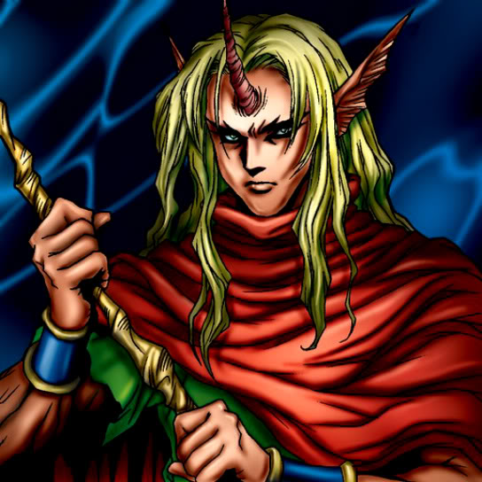

D. Human

STATS
ATK: 1300
DEF: 1100DECK COST
Deck Cost per Card: 24Fusion List (7 Possible Fusions)
- D. Human + Armaill = Flame Swordsman
- D. Human + Dragon Piper = Flame Swordsman
- D. Human + Dragon Zombie = Sword Arm of Dragon
- D. Human + Flame Swordsman = Vermillion Sparrow
- D. Human + Metal Dragon = Vermillion Sparrow
- D. Human + Thunder Dragon = Sword Arm of Dragon
- D. Human + Wicked Dragon with the Ersatz Head = Sword Arm of Dragon